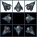
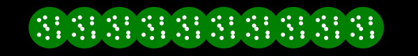

Создание игры
В этом уроке вы будете использовать анимацию и продвинутые навыки рисования которым вы уже научились для создания простой игры в стиле Space Invaders. Чтобы вы могли сосредоточиться на графике я уже предоставил скелет игры. У пользователя есть космический корабль, который он может двигать влево и вправо с помощью стрелок на клавиатуре и огонь через пробел. Пришельцы вверху экрана двигаются, пока случайно стреляют ракетами. Код содержит простой алгоритм столкновений и убивает пришельцев, когда в них попадает бластер пользователя и убивает игрока, когда в корабль попадает ракета пришельца. Вся графика отображается в виде простых прямоугольников. Посмотрите быстро вначале, а затем мы начнём это украшать.
Версия 1. Простая графика на прямоугольниках (щёлкните для запуска)
Рисование корабля с помощью спрайта
В папке с этим документом и файлами game*.html, создайте новый HTML-файл с именем mygame.html и скопируйте в него game1.html. Этот документ содержит начальную версию игры, которую вы видели выше.
Первое, что мы сделаем, это проведём апгрейд космического корабля игрока. Для этого мы воспользуемся изображением, которое я взял с великолепного сайта LostGarden.com.

Вначале нам надо изменить размеры игрока, чтобы вписать изображение. Нам нужен только верхний спрайт по центру изображения, размер которого 46x46 пикселей, так что добавьте данный код в верхнюю часть game.html чтобы установить размер объекта игрока.
var can = document.getElementById("canvas");
var c = can.getContext('2d');
// новый код
player.width = 46;
player.height = 46;Теперь нам нужно загрузить изображение в объект чтобы мы могли использовать его. Создать переменную ship_image, затем вызовите функцию loadResources() чтобы загрузить изображение на старте.
player.width = 46;
player.height = 46;
// новый код
var ship_image;
loadResources();
function loadResources() {
ship_image = new Image();
ship_image.src = "images/Hunter1.png";
}Теперь переходим к функции drawPlayer. Мы изменим последние две строки, чтобы вместо однотонного прямоугольник нарисовать картинку.
c.fillStyle = "red";
c.fillRect(player.x,player.y, player.width, player.height);
c.drawImage(ship_image,
25,1, 23,23, // исходные координаты
player.x, player.y, player.width, player.height // конечные координаты
);Давайте посмотрим на то, что здесь происходит. Наше изображение на самом деле содержит восемь версий космического корабля, но мы хотим нарисовать только один из них. drawImage нарисует подраздел изображения, передавая исходные и конечные координаты. Координаты исходника определяют, какая часть изображения будет взята. Конечные координаты определяют, где на холсте будет рисунок и насколько большой. Меняя эти числа вы можете легко создать интересный эффект растяжения, кадрирования и масштабирования.
Для этого примера мы нарисуем только часть изображения, которая находится на 25 пикселей от левого края и 23 пикселей по высоте. Затем мы рисуем картинку на холсте с координатами, шириной и высотой игрока. Обратите внимание, что ранее мы задали ширину и высоту как 46x46. Это удвоенный размер исходника 23x23. Я сделал это нарочно. Это должна быть игра в стиле ретро, поэтому я захотел увеличить графику, чтобы она выглядела пиксельной и забавной.
Теперь сохраните файл и обновите ваш браузер. Это должно выглядеть так:
Версия 2. Корабль нарисован через спрайты (щёлкните для запуска)
Анимация спрайтов для пуль и бомб
Теперь нам нужно несколько спрайтов для пуль космического корабля и бомб пришельцев. Опять мы загрузим изображения в переменные. Обновите верхнюю часть кода, чтобы он выглядел так.
var ship_image;
var bomb_image;
var bullet_image;
loadResources();
function loadResources() {
ship_image = new Image();
ship_image.src = "images/Hunter1.png";
bomb_image = new Image();
bomb_image.src = "images/bomb.png";
bullet_image = new Image();
bullet_image.src = "images/bullets.png";
}Это загрузит следующие изображения.
images/bullets.png (увеличено в четыре раза)

images/bomb.png (увеличено в четыре раза)
Заметьте, что данные изображения также содержат несколько спрайтов. Однако в данном случае мы хотим использовать все спрайты. Каждый кадр анимации. Зацикливая спрайты мы создадим иллюзию анимации на экране. Сделаем это так же, как и раньше, рисуя фрагмент основного изображения, но в этот раз мы будем менять координаты каждого кадра.
function drawPlayerBullets(c) {
c.fillStyle = "blue";
for(i in playerBullets) {
var bullet = playerBullets[i];
var count = Math.floor(bullet.counter/4);
var xoff = (count%4)*24;
//c.fillRect(bullet.x, bullet.y, bullet.width,bullet.height);
c.drawImage(
bullet_image,
xoff+10,0+9,8,8,
bullet.x,bullet.y,bullet.width,bullet.height
);
}
}Код выше похож на то, что мы делали раньше за исключением переменных xoff, count и bullet.counter. Каждая пуля имеет свой счётчик counter. Это число, которое начинается с 0, когда пуля создается, и увеличивается на 1 в каждом кадре. count — это просто счётчик делённый на четыре. Анимация всего нескольких кадров, работающих при 60 кадрах в сек., была бы слишком быстрой чтобы её увидеть, так что замедляем её в четыре раза.
xoff это count делённый по модулю на 4 и означает, что у нас теперь в цикле есть число от 0 до 3. Затем мы умножаем его на 24, это ширина каждого спрайта. xoff проходит в цикле по значениям 0, 24, 48, 72 снова и снова, давая нам постоянно меняющееся смещение по x в мастер-изображении (лишние +10 учитывают дополнительное пространство по левому краю мастер-изображения).
Код выше добавляет анимацию спрайта пуль. Теперь мы проделаем то же самое для бомб изменив в коде createEnemyBullet и drawEnemyBullets.
function createEnemyBullet(enemy) {
return {
x:enemy.x,
y:enemy.y+enemy.height,
width:4,
height:12,
width:30,
height:30,
counter:0,
}
}
function drawEnemyBullets(c) {
for(var i in enemyBullets) {
var bullet = enemyBullets[i];
c.fillStyle = "yellow";
c.fillRect(bullet.x, bullet.y , bullet.width, bullet.height);
var xoff = (bullet.counter%9)*12 + 1;
var yoff = 1;
c.drawImage(bomb_image,
xoff,yoff,11,11,
bullet.x,bullet.y,bullet.width,bullet.height
);
}
}Обратите внимание, что в коде выше мы изменили размер вражеских бомб по умолчанию на 30. Таким образом функции обнаружения столкновений будут использовать тот же размер, что и рисунки. Мы должны проделать то же самое для пуль космического корабля в функции firePlayerBullet.
function firePlayerBullet() {
// создаём новую пулю
playerBullets.push({
x: player.x,
x: player.x+14,
y: player.y - 5,
width:10,
height:10,
width:20,
height:20,
counter:0,
});
}Теперь наша игра выглядит так. Если у вас возникли какие-либо проблемы, сравните свой код с файлом game3.html . Они должны быть одинаковыми.
Версия 3. Противники бросаются спрайтами (щёлкните для запуска)
Процедурная графика для пришельцев
Давайте изменим способ рисования пришельцев. Вместо использования спрайтов, мы сделаем это процедурно, это означает что всё рисование находится в коде, а не заранее нарисовано. Нашей целью является зелёный круг заполненный потоком маленьких белых шаров, которые плавают вокруг в цикле. Они выглядят так:

Поскольку это будет радикальное изменение в коде рисования противника, то создадим новую функцию с именем drawEnemy(). Для начала изменим drawEnemies() чтобы из неё вызывалась функциz drawEnemy:
function drawEnemies(c) {
for(var i in enemies) {
var enemy = enemies[i];
if(enemy.state == "alive") {
c.fillStyle = "green";
drawEnemy(c,enemy,15);
}
if(enemy.state == "hit") {
c.fillStyle = "purple";
enemy.shrink--;
drawEnemy(c,enemy,enemy.shrink);
}
// вероятно, никогда не будет вызвана
if(enemy.state == "dead") {
c.fillStyle = "black";
c.drawEnemy(c,enemy,15);
}
}
}Теперь создайте функцию drawEnemy() вроде этой:
function drawEnemy(c,enemy,radius) {
if(radius <=0) radius = 1;
var theta = enemy.counter;
c.save();
c.translate(0,30);
// рисуем фоновый круг
circlePath(c, enemy.x, enemy.y, radius*2);
c.fill();
// рисуем волнистые точки
for(var i=0; i<10; i++) {
var xoff = Math.sin(toRadians(theta+i*36*2))*radius;
var yoff = Math.sin(toRadians(theta+i*36*1.5))*radius;
circlePath(c, enemy.x + xoff, enemy.y + yoff, 3);
c.fillStyle = "white";
c.fill();
}
c.restore();
}
function toRadians(d) {
return d * Math.PI * 2.0 / 360.0;
}
function circlePath(c, x, y, r) {
c.beginPath();
c.moveTo(x,y);
c.arc(x,y, r, 0, Math.PI*2);
}Код выше несколько сложен, так давайте внимательно разберём его по шагам. Функция drawEnemy содержит три аргумента: контекст рисования (c), противник для рисования и радиус закрученных шаров. Для начала вычисляем угол theta на основе внутреннего счётчика противника. Это сделает позицию шаров слегка смещённой в каждом кадре. Следующий код рисует круг и заливает его текущим цветом. circlePath это маленькая функция-утилита для рисования круга.
Наконец, в цикле десять раз рисуем маленькие белые круги. Положение каждого круга получается из значений xoff и yoff. Выглядит сложно, но это на самом деле довольно просто. Значение х — это синус текущего угла умноженный на радиус. Значение у — также синус текущего угла умноженный на радиус. Чтобы сместить значения в каждом кадре мы добавляем значение в theta: i*36*2. Настройка значения у похожа: i*36*1.5. Если настройки оказались бы одинаковыми, то точки станут двигаться по прямой линии. Делая их немного разными мы создали шаблон кружения. Я выбрал именно эти числа просто играя со значениями. Базовая тригонометрия может создать множество интересных движений, вы должны просто поиграть с ними, пока не найдёте понравившееся. Попробуйте изменить 1.5 до 3.0 и увидите как это повлияет на результат.
В качестве небольшой финальной шлифовки давайте сделаем плавно исчезающий текст «game over / swarm defeated» вместо его простого появления. У нас уже есть объект overlay со счётчиком, который мы можем использовать для настройки альфы в течение времени. Нам просто нужно переопределить drawOverlay установив значение globalAlpha и нарисовать текст:
function drawOverlay(c) {
if(overlay.counter == -1) return;
// появление
var alpha = overlay.counter/50.0;
if(alpha > 1) alpha = 1;
c.globalAlpha = alpha;
c.save();
c.fillStyle = "white";
c.font = "Bold 40pt Arial";
c.fillText(overlay.title,140,200);
c.font = "14pt Arial";
c.fillText(overlay.subtitle, 190,250);
c.restore();
}Вот как игра сейчас выглядит.
Версия 4. Пришельцы с процедурной анимацией (щёлкните для запуска)
Симулятор частиц для взрывов
Теперь давайте, наконец, добавим настоящий взрыв с использованием частиц, когда игрок умирает. Для начала, перенесём взрыв игрока в отдельную функцию, как эта:
function drawPlayer(c) {
if(player.state == "dead") return;
if(player.state == "hit") {
c.fillStyle = "yellow";
c.fillRect(player.x,player.y, player.width, player.height);
drawPlayerExplosion(c);
return;
}
c.drawImage(ship_image,
25,1, 23,23, // исходные координаты
player.x, player.y, player.width, player.height // конечные координаты
);
}Теперь мы создадим простую систему частиц. Вспомним из лекции, что система частиц это просто список объектов простых частиц, которые мы обновляем и рисуем в каждом кадре. Для взрыва мы хотим, чтобы частицы стартовали там же, где игрок и расширялись в произвольном направлении со случайной скоростью. Код для создания частиц выглядит так.
var particles = [];
function drawPlayerExplosion(c) {
// старт
if(player.counter == 0) {
particles = []; // стираем все старые значения
for(var i = 0; i<50; i++) {
particles.push({
x: player.x + player.width/2,
y: player.y + player.height/2,
xv: (Math.random()-0.5)*2.0*5.0, // скорость по x
yv: (Math.random()-0.5)*2.0*5.0, // скорость по y
age: 0,
});
}
}Заметьте, что значения скорости начинаются со случайного числа. Math.random всегда возвращает значение от 0 до 1. Вычитая 0.5 и умножая на 2 мы получаем случайное число от -1 до 1. Тогда мы можем несколько масштабировать его, если это выглядит слишком быстро для игры. Не стесняйтесь подправить значение 5.0.
Теперь нам нужно обновить и нарисовать каждую частицу:
// обновляем и рисуем
if(player.counter > 0) {
for(var i=0; i<particles.length; i++) {
var p = particles[i];
p.x += p.xv;
p.y += p.yv;
var v = 255-p.age*3;
c.fillStyle = "rgb("+v+","+v+","+v+")";
c.fillRect(p.x,p.y,3,3);
p.age++;
}
}
};Новое положение каждой частицы это старое положение плюс скорость. Затем мы вычисляем значение цвета v на основе возраста частицы. Поскольку мы имеем дело со значениями rgb, то нам нужно число начинающееся с 255 и уменьшающее со временем. Тогда цвет будет начинаться с белого и плавно переходить к чёрному.
Вот как выглядит финальная игра.
Версия 5. Завершённая игра (щёлкните для запуска)
Заключение
Эта практическая глава едва касается всех возможностей Canvas. Я призываю вас поработать с этим образцом игры, добавляя фон, меняя цвета, регулируя скорость анимации и выбирая новые спрайты.
Полный набор изображений из Lost Garden доступен здесь. LostGarden.com содержит большую коллекцию бесплатного игрового арта, а также массу замечательных заметок по геймдизайну. Я настоятельно рекомендую вам прочитать их.

Все материалы сайта доступны по лицензии Creative Commons «Attribution-NonCommercial» («Атрибуция — Некоммерческое использование») 4.0 Всемирная, если не указано иное.